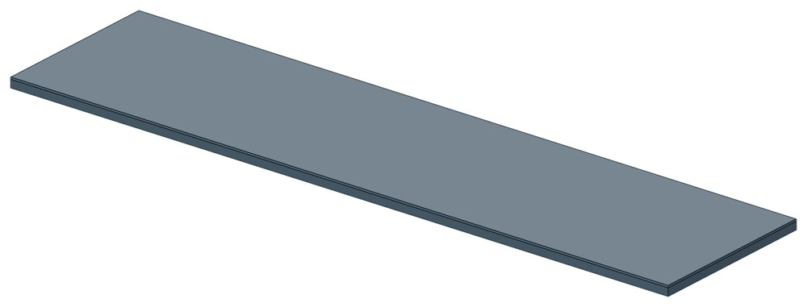
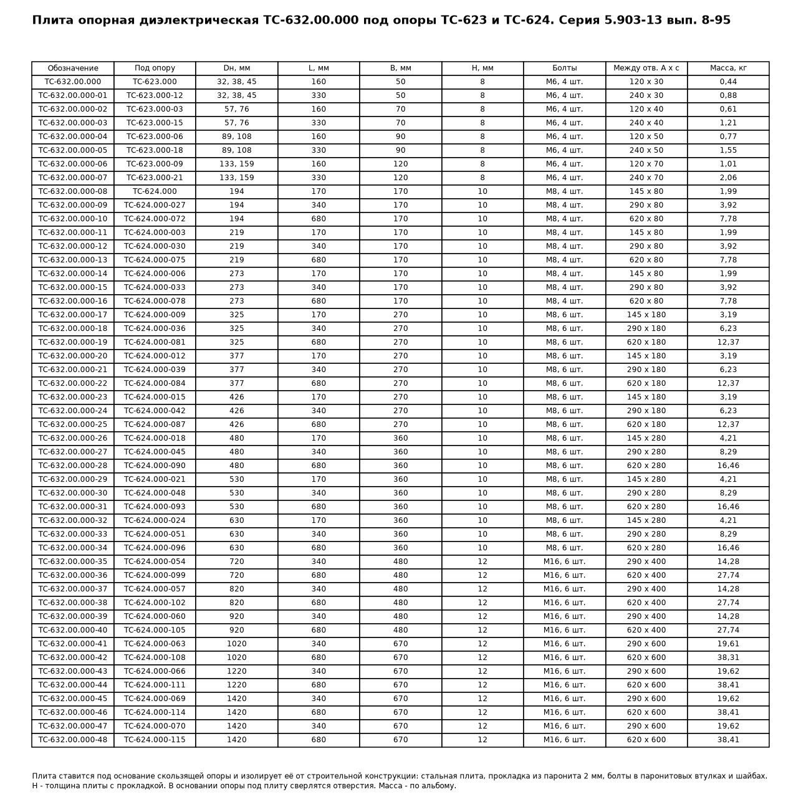

Опорные плиты диэлектрические ТС-632
Диэлектрическая опорная плита — не опора, а дополнение к приварным скользящим опорам. Стальная плита с паронитовой прокладкой ставится под основание опоры и электрически изолирует трубопровод от строительной конструкции.

- Диаметр трубы Dн
- 32–1420 мм
- Документ
- Серия 5.903-13 вып. 8-95
- Исполнений
- 49
- Масса
- 0,44–38,41 кг
- 3D-модели
- у всех исполнений
Применение и монтаж
Назначение: где применяется
Под опоры ТС-623 и ТС-624, Dн 32–1420 мм — там, где нужна защита трубопровода от блуждающих токов. Электроизолирующие подвижные опоры — мера защиты по СП 124.13330.2012, п. 13.9. По ГОСТ Р 51164-98, п. 3.5 надземные участки магистральных трубопроводов изолируют от опор с сопротивлением не менее 100 кОм на одной опоре.
Монтаж: как устанавливается
Плиту с прокладкой подкладывают под основание опоры и стягивают с ним болтами. Болты проходят через паронитовые втулки и шайбы, поэтому металл опоры не касается плиты. Отверстия в основании опоры под эти болты выполняют при заказе опоры вместе с плитой.
Отличия от соседних типов
Плита подходит только к приварным опорам ТС-623 и ТС-624. У хомутовой ТС-626 и бугельной ТС-627 изоляция своя — паронитовые прокладки между трубой и опорой, плита им не нужна.
Габаритная схема ТС-632

Состав комплекта на одну опору
| Плита стальная | 1 шт. |
| Прокладка паронитовая | 1 шт. |
| Втулка паронитовая | 4 шт. |
| Шайба паронитовая | 4 шт. |
| Болт М6 | 4 шт. |
| Шайба стальная | 4 шт. |
Таблица исполнений ТС-632
| Обозначение | Код ПРОМБУРГ | Dнмм | Ширина Вмм | Высота Нмм | Длина Lмм | Массакг | 3D |
|---|---|---|---|---|---|---|---|
| ТС-632.00.000 | ПБ-632-0032-1 | 32, 38, 45 | 50 | 8 | 160 | 0,44 | 3D |
| ТС-632.00.000-01 | ПБ-632-0032-2 | 32, 38, 45 | 50 | 8 | 330 | 0,88 | 3D |
| ТС-632.00.000-02 | ПБ-632-0057-1 | 57, 76 | 70 | 8 | 160 | 0,61 | 3D |
| ТС-632.00.000-03 | ПБ-632-0057-2 | 57, 76 | 70 | 8 | 330 | 1,21 | 3D |
| ТС-632.00.000-04 | ПБ-632-0089-1 | 89, 108 | 90 | 8 | 160 | 0,77 | 3D |
| ТС-632.00.000-05 | ПБ-632-0089-2 | 89, 108 | 90 | 8 | 330 | 1,55 | 3D |
| ТС-632.00.000-06 | ПБ-632-0133-1 | 133, 159 | 120 | 8 | 160 | 1,01 | 3D |
| ТС-632.00.000-07 | ПБ-632-0133-2 | 133, 159 | 120 | 8 | 330 | 2,06 | 3D |
| ТС-632.00.000-08 | ПБ-632-0194-1 | 194 | 170 | 10 | 170 | 1,99 | 3D |
| ТС-632.00.000-09 | ПБ-632-0194-2 | 194 | 170 | 10 | 340 | 3,92 | 3D |
| ТС-632.00.000-10 | ПБ-632-0194-3 | 194 | 170 | 10 | 680 | 7,78 | 3D |
| ТС-632.00.000-11 | ПБ-632-0219-1 | 219 | 170 | 10 | 170 | 1,99 | 3D |
| ТС-632.00.000-12 | ПБ-632-0219-2 | 219 | 170 | 10 | 340 | 3,92 | 3D |
| ТС-632.00.000-13 | ПБ-632-0219-3 | 219 | 170 | 10 | 680 | 7,78 | 3D |
| ТС-632.00.000-14 | ПБ-632-0273-1 | 273 | 170 | 10 | 170 | 1,99 | 3D |
| ТС-632.00.000-15 | ПБ-632-0273-2 | 273 | 170 | 10 | 340 | 3,92 | 3D |
| ТС-632.00.000-16 | ПБ-632-0273-3 | 273 | 170 | 10 | 680 | 7,78 | 3D |
| ТС-632.00.000-17 | ПБ-632-0325-1 | 325 | 270 | 10 | 170 | 3,19 | 3D |
| ТС-632.00.000-18 | ПБ-632-0325-2 | 325 | 270 | 10 | 340 | 6,23 | 3D |
| ТС-632.00.000-19 | ПБ-632-0325-3 | 325 | 270 | 10 | 680 | 12,37 | 3D |
| ТС-632.00.000-20 | ПБ-632-0377-1 | 377 | 270 | 10 | 170 | 3,19 | 3D |
| ТС-632.00.000-21 | ПБ-632-0377-2 | 377 | 270 | 10 | 340 | 6,23 | 3D |
| ТС-632.00.000-22 | ПБ-632-0377-3 | 377 | 270 | 10 | 680 | 12,37 | 3D |
| ТС-632.00.000-23 | ПБ-632-0426-1 | 426 | 270 | 10 | 170 | 3,19 | 3D |
| ТС-632.00.000-24 | ПБ-632-0426-2 | 426 | 270 | 10 | 340 | 6,23 | 3D |
| ТС-632.00.000-25 | ПБ-632-0426-3 | 426 | 270 | 10 | 680 | 12,37 | 3D |
| ТС-632.00.000-26 | ПБ-632-0480-1 | 480 | 360 | 10 | 170 | 4,21 | 3D |
| ТС-632.00.000-27 | ПБ-632-0480-2 | 480 | 360 | 10 | 340 | 8,29 | 3D |
| ТС-632.00.000-28 | ПБ-632-0480-3 | 480 | 360 | 10 | 680 | 16,46 | 3D |
| ТС-632.00.000-29 | ПБ-632-0530-1 | 530 | 360 | 10 | 170 | 4,21 | 3D |
| ТС-632.00.000-30 | ПБ-632-0530-2 | 530 | 360 | 10 | 340 | 8,29 | 3D |
| ТС-632.00.000-31 | ПБ-632-0530-3 | 530 | 360 | 10 | 680 | 16,46 | 3D |
| ТС-632.00.000-32 | ПБ-632-0630-1 | 630 | 360 | 10 | 170 | 4,21 | 3D |
| ТС-632.00.000-33 | ПБ-632-0630-2 | 630 | 360 | 10 | 340 | 8,29 | 3D |
| ТС-632.00.000-34 | ПБ-632-0630-3 | 630 | 360 | 10 | 680 | 16,46 | 3D |
| ТС-632.00.000-35 | ПБ-632-0720-1 | 720 | 480 | 12 | 340 | 14,28 | 3D |
| ТС-632.00.000-36 | ПБ-632-0720-2 | 720 | 480 | 12 | 680 | 27,74 | 3D |
| ТС-632.00.000-37 | ПБ-632-0820-1 | 820 | 480 | 12 | 340 | 14,28 | 3D |
| ТС-632.00.000-38 | ПБ-632-0820-2 | 820 | 480 | 12 | 680 | 27,74 | 3D |
| ТС-632.00.000-39 | ПБ-632-0920-1 | 920 | 480 | 12 | 340 | 14,28 | 3D |
| ТС-632.00.000-40 | ПБ-632-0920-2 | 920 | 480 | 12 | 680 | 27,74 | 3D |
| ТС-632.00.000-41 | ПБ-632-1020-1 | 1020 | 670 | 12 | 340 | 19,61 | 3D |
| ТС-632.00.000-42 | ПБ-632-1020-2 | 1020 | 670 | 12 | 680 | 38,31 | 3D |
| ТС-632.00.000-43 | ПБ-632-1220-1 | 1220 | 670 | 12 | 340 | 19,62 | 3D |
| ТС-632.00.000-44 | ПБ-632-1220-2 | 1220 | 670 | 12 | 680 | 38,41 | 3D |
| ТС-632.00.000-45 | ПБ-632-1420-1 | 1420 | 670 | 12 | 340 | 19,62 | 3D |
| ТС-632.00.000-46 | ПБ-632-1420-2 | 1420 | 670 | 12 | 680 | 38,41 | 3D |
| ТС-632.00.000-47 | ПБ-632-1420-3 | 1420 | 670 | 12 | 340 | 19,62 | 3D |
| ТС-632.00.000-48 | ПБ-632-1420-4 | 1420 | 670 | 12 | 680 | 38,41 | 3D |
Чтобы заказать, сообщите обозначение и код ПРОМБУРГ: +7 (499) 325-51-35, promburg@yandex.ru.
Нормативные документы
- Серия 5.903-13 вып. 8-95 Опоры трубопроводов подвижные. Рабочие чертежи (PDF, 199 с.) — документ, по которому изготавливается изделие
- СП 124.13330.2012 Тепловые сети. Актуализированная редакция СНиП 41-02-2003
- ГОСТ Р 51164-98 Трубопроводы стальные магистральные. Общие требования к защите от коррозии
На трубу Dн 32–1420 мм в каталоге
Позиции каталога с исполнениями на те же наружные диаметры трубы.
Детали трубопровода
- Фланец стальной плоский приварной общих Dн: 21
- Фланец стальной воротниковый общих Dн: 20
- Отвод стальной крутоизогнутый 90° общих Dн: 18
- Отвод стальной крутоизогнутый 90°, 09Г2С общих Dн: 15
- Заглушка стальная эллиптическая общих Dн: 14
- Переход стальной концентрический общих Dн: 12
- Днище стальное эллиптическое общих Dн: 9
- Отвод нержавеющий 90° общих Dн: 1
Компенсаторы
- Компенсатор сильфонный КСО общих Dн: 19
- Компенсатор сильфонный КСОФ общих Dн: 19
- Компенсатор сильфонный стартовый СК общих Dн: 19
- Компенсатор сильфонный 2ОПКР общих Dн: 18
- Компенсатор сильфонный 2ОПКР (ИЯНШ) 2ОПКРИ общих Dн: 18
- Компенсатор сильфонный 2СКУ.М 2СКУМ общих Dн: 18
- Компенсатор сильфонный 2СКУ.М (ИЯНШ) 2СКУМИ общих Dн: 18
- Компенсатор сильфонный 2СКУ.ППМ (ИЯНШ) 2СКУППМИ общих Dн: 18
- Компенсатор сильфонный КС общих Dн: 18
- Компенсатор сильфонный КСО (ИЯНШ) КСОИ общих Dн: 18
- Компенсатор сильфонный ОПКР общих Dн: 18
- Компенсатор сильфонный ОПКР (ИЯНШ) ОПКРИ общих Dн: 18
- Компенсатор сильфонный сейсмический общих Dн: 18
- Компенсатор сильфонный СКУ.М СКУМ общих Dн: 18
И ещё 21 тип — в оглавлении каталога.
Другие опоры и подвески
- Опоры приварные неподвижные скользящие ОПН общих Dн: 21
- Опора неподвижная двухупорная ТС-660 общих Dн: 20
- Опоры сварные скользящие неподвижные и направляющие СТО 79814898-130 общих Dн: 19
- Опора приварная скользящая и неподвижная ОСТ 34-10-616-93 общих Dн: 19
- Опоры хомутовые скользящие ОСТ 34-10-617-93 общих Dн: 19
- Опоры хомутовые неподвижные ОСТ 34-10-618-93 общих Dн: 19
- Опоры скользящие неподвижные ОСТ 34-10-623-93 общих Dн: 19
- Блок подвески с опорной балкой ОСТ 34-10-726-93 общих Dн: 19
- Опора скользящая хомутовая ТС-626 общих Dн: 18
- Хомутовые опоры СК 2109-92 общих Dн: 17
И ещё 100 типов — в оглавлении каталога.
Другие типы раздела
Скользящие и катковые опоры тепловых сетей (ТС-623…ТС-632)
- Опора скользящая приварная ТС-623
- Опора скользящая приварная ТС-624
- Опора скользящая с плоским хомутом ТС-625
- Опора скользящая хомутовая ТС-626
- Опора скользящая бугельная ТС-627
- Опора катковая двухъярусная ТС-628
- Катковые опоры ТС-630
- Опоры сварных отводов ТС-631
Частые вопросы
По какому диаметру подбирать — Dн или Ду?
По наружному диаметру трубы Dн: именно он стоит в таблицах серии. Ду — условный проход, округлённая величина: Ду 100 соответствует Dн 108. В заявке указывайте Dн и толщину стенки трубы.
Как расшифровать ТС-659.00.00-03?
ТС-659.00.00 — номер чертежа типа опоры в серии 5.903-13, здесь это неподвижная хомутовая ТС-659. Цифры после дефиса — номер исполнения по таблице: -03 — это Dн 57 мм. Для заказа достаточно полного обозначения и количества. Рядом в каждой карточке стоит короткий код ПРОМБУРГ вида ПБ-659-0057-1: тип, Dн, номер исполнения.
Серия 5.903-13 заменила 4.903-10? Можно поставить одну вместо другой?
Да: выпуски 7-95 и 8-95 серии 5.903-13 выпущены взамен серии 4.903-10. Типы опор соответствуют друг другу — хомутовая ТС-659 это Т3, щитовая ТС-666 это Т8, хомутовая с корпусом ТС-670 это Т12. Обозначения, единицы нагрузок и часть размеров различаются, поэтому замену в действующем проекте согласуют с проектной организацией.
Из какой стали изготавливаются опоры?
По рабочим чертежам серии листовые детали — Ст3сп5 ГОСТ 14637-89, хомуты из круга — сталь 20 ГОСТ 1050-88. Для районов с низкой расчётной температурой воздуха применяется низколегированная сталь, в том числе 09Г2С; размеры опор при этом не меняются. В заявке укажите расчётную температуру наружного воздуха.
Почему часть поверхностей опоры не окрашена?
Поверхности под приварку к трубе и к несущей конструкции оставляют без краски, иначе шов получится некачественным. Их консервируют смазкой, которую снимают перед сваркой.
Что указать в заявке, чтобы получить цену без уточнений?
Обозначение с номером исполнения или код ПБ, количество, Dн и стенку трубы, расчётную температуру наружного воздуха, покрытие, город доставки и желаемый срок. Кнопка «В заявку» в таблице собирает спецификацию, которую можно выгрузить в Excel или отправить письмом.